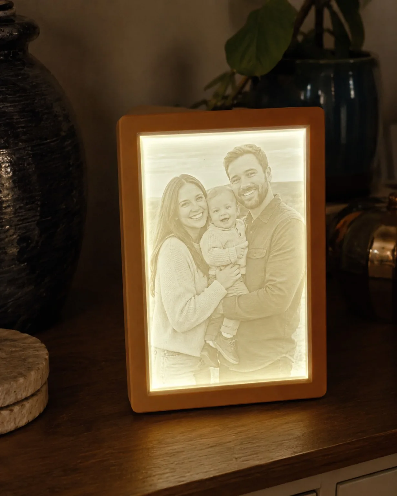

Desconecta
Apaga y desconecta la pieza antes de empezar.
Tu litofanía Takara 3D
Lo esencial para utilizar, limpiar y conservar tu recuerdo de forma segura.

Uso y seguridad
Al tratarse de una lámpara, que esté ligeramente templada durante el uso es normal. Desconéctala si el calor es excesivo o llega a quemar al tocarla, aparece olor, deformación, parpadeo persistente o una conexión inestable.
Sin dañar el relieve
Apaga y desconecta la pieza antes de empezar.
Retira el polvo con un cepillo limpio, seco y de cerdas muy suaves; por ejemplo, un cepillo dental ultrasuave reservado para la pieza. Pásalo sin presionar.
Usa un paño de microfibra seco. Para una marca puntual, humedécelo apenas con agua y deja secar por completo antes de conectar.
Evita: pulverizar líquidos, mojar el conector, sumergir la pieza, alcohol, disolventes, productos abrasivos y estropajos.
Para conservarla
Es normal: una ligera textura de fabricación es propia de la impresión 3D y no afecta al funcionamiento.
Soporte Takara 3D
Comprueba el cable y que la fuente sea USB de 5 V. Si continúa, cuéntanos qué ocurre y te ayudaremos.
Otro momento especial
Puedes solicitarlo en el establecimiento donde conociste Takara 3D o prepararlo directamente con nosotros.